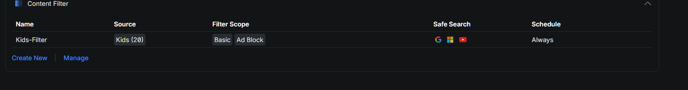
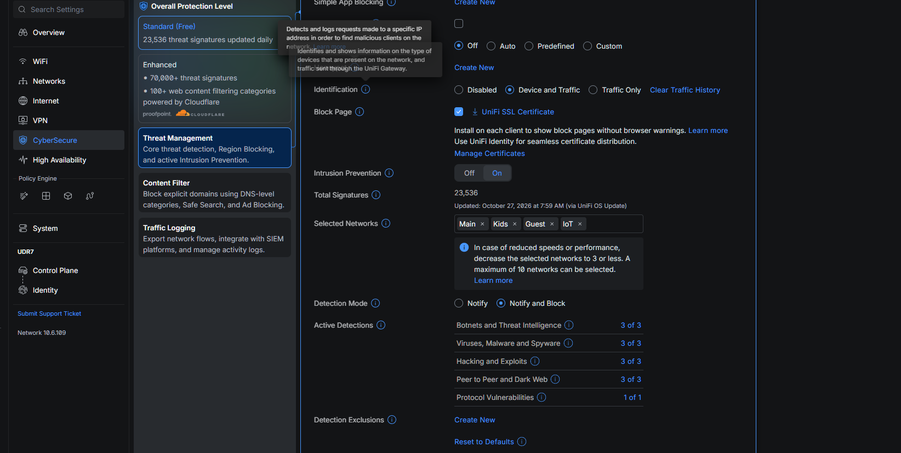

Home Lab Project
Home Network Build with UniFi Dream Router 7
This project replaced a single ISP router with a UniFi Dream Router 7 (UDR7) to build a segmented, filtered, and monitored home network. The work covered initial setup, VLAN design, zone-based firewall rules, content filtering and forced DNS on the children's network, a guest captive portal, and encrypted remote access over WireGuard.
The line is a symmetrical 900/900 Mbps fibre service with a static IPv4 address. The UDR7 connects directly to the fibre ONT and holds the public address, so there is no ISP router in the path and no double NAT. It performs all routing, firewalling, DNS, and VPN termination.
Privacy note: The IP addresses shown on this page are generic placeholders (the 10.0.x.x ranges), not the live network, which uses a different scheme. Real SSID names, credentials, and the public IP address are not shown anywhere.
Project Snapshot
Overview
| Gateway | UniFi Dream Router 7 (Wi-Fi 7, 2.5 GbE WAN, 10G SFP+, 3×2.5 GbE LAN with one PoE) |
| Line | 900/900 Mbps XGS-PON fibre, static IPv4, no CGNAT |
| IPv6 | /48 delegation via DHCPv6-PD; a /64 per VLAN, dual-stack |
| Upstream | UDR7 connected directly to the fibre ONT; no ISP router, no double NAT |
| Segmentation | Four networks: Main, Kids, IoT, Guest (Servers VLAN planned) |
| Kids controls | Content filter (Basic), Ad Block, locked SafeSearch, forced DNS, scheduled access (09:00–19:00) |
| Guest | Hotspot zone with captive portal, client isolation, internet only |
| Remote access | WireGuard VPN server (per-device configs) and UniFi Teleport |
| Firewall | Zone-based policies with logging; traffic and client visibility |
| Threat management | IDS/IPS (Threat Management) in Notify & Block mode across all four networks |
| Resilience | Local admin account alongside the cloud login; automatic and exported backups |
| Management | Single UniFi console today; UniFi Site Manager ready for added sites |
Problem
Why This Project Was Needed
The ISP router handled routing and Wi-Fi on a single flat network, with every device on the same broadcast domain. That left no way to separate trusted machines from untrusted ones, no content control for the children's devices, and almost no visibility into what was connected.
Before
- One flat network for every device, trusted and untrusted alike.
- No VLANs and no firewall rules between device types.
- No content filtering or safe search for the kids' devices.
- No inbound access for clean, secure remote connectivity.
- Little visibility of clients or traffic.
Target State
- Separate VLANs for Main, Kids, IoT, and Guest.
- Firewall rules isolating untrusted networks and the router itself.
- Filtered, SafeSearch-locked internet on the Kids network.
- Guest access on a captive portal, isolated from everything.
- Encrypted remote access with no exposed services.
Design
Network Topology
The UDR7 connects directly to the fibre ONT and terminates the public address. Each network is a separate VLAN with its own subnet and firewall policy. Trusted devices sit on Main; everything that does not need to reach Main is pushed onto its own segment.
Single Routed Gateway
The UDR7 holds the public IP and routes every VLAN, replacing the ISP router's flat network with segmented, policy-controlled paths.
Segmentation Policy
Untrusted networks cannot reach other devices or the router's own management, and Guest is isolated behind a captive portal with internet access only.
Segmentation
VLAN and Wi-Fi Design
Four networks cover the household, each with its own SSID. A device gets its own VLAN when it needs different rules from everything else; groups that would share the same rules stay together. A Servers VLAN is planned for self-hosting and local DNS filtering, and is not yet in place.
| Network | VLAN ID | Subnet | Security | Notes |
|---|---|---|---|---|
| Main | 1 | 10.0.10.0/24 | WPA2/WPA3 | Adults' devices and the main PC; tri-band, 6 GHz needs WPA3 |
| Kids | 20 | 10.0.20.0/24 | WPA2/WPA3 | Content filter, Ad Block, locked SafeSearch, forced DNS |
| Guest | 30 | 10.0.30.0/24 | WPA2/WPA3 | Hotspot zone, captive portal, client isolation, internet only |
| IoT | 40 | 10.0.40.0/24 | WPA2 | TVs, camera, printer; 2.4/5 GHz for legacy devices, client isolation |
| Servers (planned) | 50 | 10.0.50.0/24 | — | Future project; wired only, reached over WireGuard |
Fixed addresses are set as DHCP reservations on the UDR7 for the router, the main PC, and devices that are connected to, such as the printer and the camera. Everything that only connects outward stays on DHCP. Keeping all reservations in one place avoids address clashes and keeps DNS and gateway settings consistent.
IPv6
Dual-Stack Addressing
The line includes a routed IPv6 /48 delegated by DHCPv6-PD. The UDR7 carves a separate /64 out of it for each VLAN, so every network runs dual-stack: devices hold a private IPv4 address and a global IPv6 address at the same time.
Prefix Delegation
- ISP delegates a /48 via DHCPv6-PD.
- One /64 per VLAN (Main, Kids, Guest, IoT), assigned by the UDR7.
- Clients get global addresses by SLAAC, alongside IPv4 from DHCP.
Firewall Parity
- Every isolation and management-block rule is written for IPv6 as well as IPv4.
- IPv6 is tested, not assumed: a ping across segments over IPv6 returns 100% loss.
Security angle: IPv6 is where home setups quietly leak. IPv4 firewall rules do not cover IPv6, so a device blocked from another VLAN over IPv4 can still reach it over IPv6 if the v6 rules are missing. Writing the isolation and DNS rules for both versions, and confirming the cross-VLAN ping fails over IPv6, closes that gap.
Firewall
Zone-Based Firewall Rules
Rules are built in the UDR7's zone-based policy engine. Return traffic is handled by the stateful firewall; the explicit policies below isolate untrusted networks, lock the router's own management away from them, and force the Kids network to resolve DNS through the router so the content filter cannot be bypassed.
| Policy | Source | Destination | Action |
|---|---|---|---|
| Network isolation | Kids, IoT | Other devices on any VLAN | Block |
| Guest hotspot | Guest | Other clients + all private ranges | Block |
| Block management UI | Kids, IoT | Gateway TCP 80, 443, 22 | Block |
| Force router DNS | Kids | External DNS (TCP/UDP 53, 853) | Block |
| Internet | All VLANs | Internet (not matched above) | Allow |
The management-UI block is scoped to the Kids and IoT networks only, not the whole internal zone. Including Main there would lock the admin out of the router. Each rule was tested from the network it restricts and from Main to confirm access still works where it should.
Child Safety
Securing the Kids Network
The Kids VLAN carries the children's devices on their own SSID and subnet. It is isolated from every other network, and its internet access is filtered at the DNS layer, with search results locked down and Wi-Fi available only during set hours.
Content Filtering
- UniFi content filter set to Basic (adult and malicious sites), scoped to Kids only.
- Ad Block enabled, since ad networks are a common route to scam and malware pages.
- SafeSearch forced and locked on Google, Bing, and YouTube.
Access Control
- Isolated from Main, IoT, and Guest; blocked from the router's management UI.
- All DNS forced through the router so the filter applies to every device.
- Scheduled access: Wi-Fi available 09:00–19:00, off outside those hours.
- WPA2/WPA3 with its own key, separate from Main.

Security angle: the standard bypass is a device setting its own DNS, whether plain DNS or DNS-over-TLS, to resolve names past the filter. The force-router-DNS rule blocks outbound 53 and 853 to anything but the gateway, so a device that changes its DNS gets no internet at all rather than unfiltered internet. That was verified by setting a phone's Private DNS to an external resolver and confirming it lost access, then returned to normal once set back to automatic.
Guest Access
Guest Network and Captive Portal
Guests join a dedicated network on the UDR7's Hotspot zone, which keeps them away from every internal device and the router itself without a custom rule.
Captive Portal
- A portal landing page is shown before internet access is granted.
- A QR code lets guests join without being handed the Wi-Fi key directly.
Isolation
- Client isolation on, so guest devices cannot see each other.
- No path to Main, Kids, IoT, or the management UI.
- Internet access only.
Shared Services
Printer on the IoT Segment
The network printer sits on the IoT VLAN at 10.0.40.20, away from trusted devices, with a fixed IP so its address never changes. Because IoT is isolated, reaching it to print needs two things handled deliberately: discovery and a scoped firewall exception.
Discovery
- AirPrint and Mopria rely on mDNS, which does not cross VLANs by default.
- The UDR7's mDNS reflector lets trusted devices find the printer across segments.
Firewall Exception
- Trusted devices to printer only, on print ports: TCP 631 (IPP), 9100 (RAW), 515 (LPD), UDP 5353.
- The printer itself cannot start a connection back to any VLAN.
Printers are a real foothold because they run old firmware and are rarely patched, so the exception is one-directional and limited to the print ports. A compromised printer still cannot reach the devices on other networks.
Remote Access
Secure Inbound Connectivity
With the UDR7 connected straight to the ONT and holding the public static address, there is no double NAT in front of it, so inbound connections reach it directly and remote access works properly.
WireGuard VPN Server
- Encrypted tunnel for reaching home services from outside.
- The only inbound path; no services exposed directly.
- One config per device, so any single client can be revoked on its own.
UniFi Teleport
- One-tap remote access from the UniFi app.
- Useful for quick management without a full VPN profile.
Each WireGuard config is a full key into the network, so they are generated per device, scanned once from the router's QR code, and never shared or screenshotted. VPN clients land in their own subnet (10.0.60.0/24), kept separate from the LAN.
Threat Detection
IDS/IPS (Threat Management)
The UDR7's Threat Management is enabled in active Intrusion Prevention mode, so it does not just detect known-bad traffic, it blocks it inline. It runs on the Standard tier with the full signature set updated daily.
Configuration
- Mode: Notify and Block (active IPS, not detection only).
- Applied to all four networks: Main, Kids, Guest, IoT.
- 23,000+ threat signatures, updated daily.
Categories Enabled
- Botnets and threat intelligence
- Viruses, malware, and spyware
- Hacking and exploits
- Peer-to-peer and dark web
- Protocol vulnerabilities

Security angle: IPS inspects traffic through deep packet inspection, so it catches what the firewall rules do not, a device reaching a known botnet C2, an exploit attempt against a service, or malware calling home. That inspection is CPU-bound on the UDR7, so throughput on the 900/900 line is worth watching; UniFi itself suggests narrowing the inspected networks if speeds drop.
Resilience
Accounts and Backups
Two safeguards keep the console reachable and the configuration recoverable if something goes wrong with the account or the device.
Local Admin Account
- A local-only UniFi admin created alongside the Ubiquiti cloud login.
- If the cloud account is locked out, unreachable, or loses its MFA, the local account still gets into the console.
- Strong, unique password held in the password manager.
Backups
- UniFi automatic backups left on.
- A config backup exported and stored off the device after every major change (zone upgrade, new firewall policy, filter).
- A restore rebuilds the whole configuration without redoing it by hand.
Security angle: the local admin is a second key to the network, so it is treated like one, a strong unique password and MFA where available. Backups live off the device because a backup stored only on the router is gone the moment the router is.
Security Rationale
Attack, Detect, Harden
The design choices map directly to how a flat network gets abused and how segmentation limits and surfaces that abuse.
- Lateral movement: on a flat network, one compromised IoT device can reach every other host. Network isolation on Kids and IoT removes that path, and the firewall logs show denied cross-VLAN attempts.
- Router management: the UDR7's own login and SSH are blocked from Kids and IoT, so a device on an untrusted segment cannot even reach the admin interface to attack it.
- Filter bypass: content filtering works at DNS, so the obvious evasion is a custom resolver or DoH. Forcing all Kids DNS through the router closes that, and denied-DNS events stand out in the logs.
- Exposed services: no port forwards to internal hosts. Inbound is WireGuard only, so there is no listening service on the public IP to scan or brute-force.
- Detection and prevention: IDS/IPS inspects traffic against 23,000+ signatures in Notify and Block mode, so known botnet, malware, and exploit traffic is dropped inline. Client and traffic visibility makes an unexpected device, a blocked cross-VLAN attempt, or an unusual outbound flow stand out against a normal baseline.
Validation
Testing the Controls
Each rule was tested from the network it was meant to restrict, and from Main to confirm access still worked where it should. Addresses below use documentation ranges, not the live scheme.
Inter-VLAN Isolation
A client on Guest could not open the Main or IoT gateway. Cross-segment connections aborted, confirming untrusted networks cannot reach other VLANs or the router.
IPv6 Isolation (Ping)
A ping across segments over IPv6 returned 100% loss, confirming the isolation rules hold over IPv6 as well as IPv4 — the gap that is easy to miss when only IPv4 is checked.
Content Filter and Forced DNS
On Kids, a known adult domain is blocked and SafeSearch shows locked. Setting the device's DNS to an external resolver dropped internet entirely, proving the filter cannot be bypassed.
Controlled Management Access
The console was reachable from a trusted Main device and blocked from every untrusted network, so management stays limited to the trusted segment.
Remote Access Verified
With the UDR7 holding the public IP directly, the home network was reachable from a mobile connection over an encrypted tunnel, with no services listening on that address.
Outcome
Project Outcome
The household moved from a single flat ISP network to a segmented, filtered, and monitored network on a full symmetrical fibre line. Trusted and untrusted devices are separated by firewall policy, the children's devices are filtered and search-locked, guests are isolated behind a portal, and remote access is encrypted with nothing exposed.
Operational Improvements
- Full 900/900 Mbps with the UDR7 as the only router.
- Separate networks for trusted, untrusted, child, and guest devices.
- Filtered, SafeSearch-locked internet for the kids.
- Encrypted remote access with no exposed services.
Technical Value
- Zone-based firewall and inter-VLAN policy design.
- DNS-layer content filtering with anti-bypass enforcement.
- Direct fibre (ONT) uplink with static IP routing.
- WireGuard tunnel configuration and guest captive portal.
Roadmap
Future Work
The build so far is one site. The next phases extend it into a managed, multi-site network with self-hosted services.
This Site
- Add the Servers VLAN for self-hosting and local DNS filtering (AdGuard or Pi-hole).
- A wired access point downstairs if the Wi-Fi survey calls for it.
Multi-Site
- Build and manage two more homes (my brothers') to the same segmented, filtered design.
- Site-to-site VPN linking the networks for shared services and remote support.
- Central management across all sites through UniFi Site Manager, each owner keeping control of their own console.
Skills